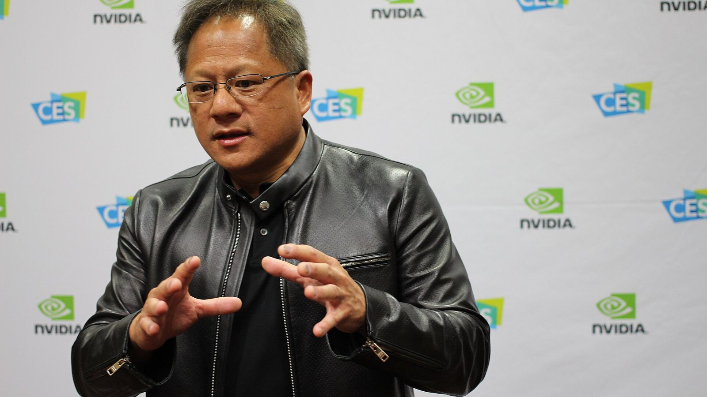

Analyse

Nvidia ohne Huang: Ein Gründer geht, und der Markt prüft, was von der Firma bleibt
$NVDA
Jensen Huang tritt nach zwei Affären als Nvidia-Chef zurück, Finanzchefin Colette Kress übernimmt. Was belegt ist, was nur behauptet wird, wie der Markt reagiert und was die Zahlen am 17. November klären müssen.

Kurz gesagt
Der Schritt: Jensen Huang tritt als Präsident, Chef und Verwaltungsrat zurück, sofort. Colette Kress führt kommissarisch, ein Nachfolger wird gesucht.
Der Markt: Die Aktie verlor vorbörslich rund 11 %, in der Woche zuvor schon rund 1 Billion US-Dollar Börsenwert.
Der Test: Am 17. November meldet Nvidia Zahlen. Sie zeigen, ob die Nachfrage nach KI-Chips vom Chef abhängt oder vom Markt.
Es gibt Firmen, bei denen ein Chefwechsel eine Randnotiz im Wirtschaftsteil ist. Bei Nvidia ist es eine Zäsur. Am Donnerstagnachmittag meldet der Verwaltungsrat, dass Jensen Huang, 63, als Präsident, Vorstandschef und Mitglied des Verwaltungsrats zurücktritt, mit sofortiger Wirkung. Die Aktie fällt vorbörslich um gut 10 %. Wer auf den Kurs schaut, sieht eine Firma, die in dieser Woche rund 1 Billion Dollar an Börsenwert verloren hat und mit gut 4 Billionen Dollar trotzdem noch der zweitwertvollste Konzern der Welt ist. Wer auf den Text der Mitteilung schaut, findet keinen Grund. Das ist bemerkenswert, und es ist die erste Frage dieses Artikels.
Was Nvidia mitteilt und was offen bleibt
Die Mitteilung ist knapp. Huang tritt zurück, Colette Kress, Finanzchefin seit 2013, übernimmt kommissarisch das Amt des Vorstandschefs und behält ihr Finanzressort. Harvey C. Jones wird erster Vorsitzender des Verwaltungsrats in der Geschichte der Firma. Jones, 73, saß seit 1993 im Gremium und führte früher den Softwarekonzern Synopsys. Der Verwaltungsrat sucht einen dauerhaften Chef, intern wie extern, einen Zeitplan nennt er nicht. Am Freitag wurde bekannt, dass das Gremium dabei Arm-Chef René Haas angesprochen hat. Haas arbeitete sieben Jahre bei Nvidia, bevor er 2013 zu Arm wechselte, und gilt als Vertrauter Huangs. Ob er das Amt angeboten bekommt oder annehmen würde, ist offen, Arm und Nvidia äußerten sich nicht. Die Nvidia-Aktie schloss am Freitag knapp 3 % tiefer bei 161,48 Dollar, in einem insgesamt schwachen Handel mit Chipwerten.
Ob Huang freiwillig geht oder gegangen wird, lässt die Mitteilung offen. Bloomberg beschrieb den Schritt als Absetzung, das Wall Street Journal hatte zuvor berichtet, der Verwaltungsrat habe am Mittwoch über seine Ablösung beraten. Nach Handelsblatt-Informationen gab es keine geregelte Nachfolge, der Verwaltungsrat soll bereits mit einer externen Firma nach Kandidaten gesucht haben. Elon Musk bot Huang auf X eine neue Stelle an, es wäre ihm eine Ehre. Die beiden kennen sich seit mindestens zehn Jahren und begleiteten Präsident Trump im Frühjahr nach China. Tesla bezieht Nvidia-Chips, um KI-Modelle für autonomes Fahren zu trainieren.
Wie es dazu kam
Der Rücktritt ist das Ende einer Kette, die vor knapp zwei Wochen sichtbar wurde. Die Eckdaten, soweit sie in den Berichten stehen:
| Datum | Ereignis |
|---|---|
| 2023 | Megaspeed wird als Ableger der chinesischen Firma 7Road gegründet und baut Rechenzentren in Südostasien mit Nvidia-Chips |
| Ende 2024 | Das US-Handelsministerium ermittelt wegen möglicher Umleitung von Chips nach China, später übernimmt das Justizministerium |
| Mai 2025 | Reuters zeigt ein Video aus Taiwan, auf dem Huang mit einer Megaspeed-Managerin zu sehen ist |
| Frühjahr 2026 | Ein Memo aus dem Umfeld von Außenminister Rubio warnt vor der Frau |
| Ende Oktober 2026 | Berichte über den Verdacht, sie arbeite für Chinas Geheimdienst |
| 8. November | Huang räumt in einem Brief an die Belegschaft eine Affäre ein, der Verwaltungsrat kündigt eine unabhängige Untersuchung an |
| 9. November | Die Aktie fällt zum Wochenstart um 4,3 %, eine Sammelklage gegen Nvidia und Huang wird eingereicht |
| 10. November | Die unabhängigen Direktoren beauftragen die Kanzlei Wachtell, Lipton, Rosen & Katz |
| 11. November | New York Times und WSJ berichten über eine zweite Beziehung, zu einer Managerin, die ihm direkt untersteht |
| 12. November | Verwaltungsrat berät, Huang tritt zurück |
Zwei Dinge gehören auseinandergehalten. Die erste Affäre hat Huang selbst eingeräumt, und die zweite berichten die Zeitungen unter Berufung auf Informanten, Nvidia lehnte eine Stellungnahme ab. Dass die Megaspeed-Managerin für Chinas Dienste arbeitete, ist eine Behauptung der US-Regierung, China weist sie zurück. Dass daraus ein Schaden für Nvidia entstanden ist, hat bisher niemand belegt. Der Verwaltungsrat hatte noch am vergangenen Sonntag erklärt, er sehe keinen Grund zur Annahme, dass nationale Sicherheit oder Geschäftsgeheimnisse gelitten haben. Die Mitteilung zum Rücktritt erwähnt die Untersuchung nicht. Ob sie weiterläuft und wann sie endet, ist offen.
Der zweite Bericht verschiebt allerdings die Gewichte. Eine Beziehung zu einer direkt unterstellten Führungskraft ist ein Governance-Problem, unabhängig von jeder Spionagefrage. Der Verhaltenskodex von Nvidia verlangt, Interessenkonflikte auch durch persönliche Beziehungen zu vermeiden. Für Verwaltungsräte ist das kein Randthema, sie müssen es sanktionieren, sobald es bekannt ist.
Die älteste Falle der Welt
Für den Verdacht gegen die erste Frau gibt es eine lange Vorgeschichte. Der SPIEGEL beginnt seinen Text zum Fall mit Mordechai Vanunu. Der israelische Atomtechniker hatte der Sunday Times 1986 Details aus dem geheimen Atomzentrum Dimona verkauft, in London lernte er eine freundliche Amerikanerin kennen, die sich Cindy nannte. Sie reiste mit ihm nach Rom. In Wahrheit hieß sie Cheryl Bentov und arbeitete für den Mossad, Vanunu wurde betäubt, nach Israel gebracht und saß 18 Jahre in Haft.
Das Muster ist belegt und alt. Der DDR-Auslandsgeheimdienst unter Markus Wolf schickte „Romeos" in die Bundesrepublik, die einsame Sekretärinnen in Ämtern gewannen, rund 40 Fälle gelten als dokumentiert. Chinas Strategielehre kennt für solche Annäherungen ein eigenes Wort, „meiren ji", die List der schönen Person. Der britische Auslandsgeheimdienst MI6 und das FBI warnen Unternehmen und Geschäftsreisende ausdrücklich davor. Der Unterschied zu 1986 liegt in der Beute. Heute geht es um Technologie, um Lieferketten und um Einfluss auf Entscheidungen, und der Mann an der Spitze der KI-Industrie ist das attraktivste Ziel, das es dafür gibt. Ob Huang in eine solche Falle gelaufen ist, steht nicht fest. Dass seine Verwundbarkeit für Investoren ein Risiko war, zeigt dieser Donnerstag.
Was der Markt gerade bewertet
Die Aktie hatte am 6. Oktober ein Rekordhoch von 239,24 US-Dollar erreicht. Am 9. November schloss sie bei 178,67 Dollar (−4,3 %), am Mittwoch bei 173,73 Dollar. Nach der Meldung über die Beratungen des Verwaltungsrats rutschte sie vorbörslich auf rund 160 Dollar, nach dem Rücktritt waren es etwa 11 % unter dem Vortagesschluss. Das Tief der laufenden Bewegung lag bei 156,20 Dollar, dem niedrigsten Stand seit Juli 2025. In der Grafik von Reuters steht Nvidia damit seit Jahresbeginn bei −14,4 %, der S&P 500 bei +13,1 %.
Die Analysten reagieren uneinheitlich. Bernstein stufte laut Berichten auf Market-Perform herab und senkte das Kursziel von 400 auf 200 Dollar, Oppenheimer senkte ebenfalls, Baird ging auf Neutral. Raymond James behielt die Einstufung „Strong Buy". Auch die Branche zahlt mit. Vor der Meldung fielen Intel, Marvell und Micron um 2,7 bis 3,5 %, CoreWeave um etwa 7 %, während AMD (+2,3 %) und Broadcom (+1,4 %) zulegten. Der Markt unterscheidet also, wer vom Fall Nvidia abhängt und wer von ihm profitieren könnte.
Was für das Unternehmen spricht
Gegen den Pessimismus spricht das Geschäft. Im zweiten Geschäftsquartal meldete Nvidia 96,2 Milliarden Dollar Umsatz, 106 % mehr als im Vorjahr, davon 89,0 Milliarden aus dem Rechenzentrumsgeschäft. Für das dritte Quartal stellte der Konzern rund 108 Milliarden Dollar in Aussicht, bei einer Bruttomarge von etwa 74 %, und das ohne Rechenzentrums-Umsätze aus China. Genau der Markt, in dem die Spionagevorwürfe spielen, steckt in der Prognose also kaum drin.
Dazu kommt die Besetzung. Kress kennt die Zahlen wie kaum jemand, sie war fast 25 Jahre in Finanzfunktionen tätig, unter anderem bei Cisco und Microsoft, und führt Nvidia seit mehr als einem Jahrzehnt als Finanzchefin durch die Wachstumsjahre. Der Verwaltungsrat besteht nach dem Abgang aus unabhängigen Mitgliedern, und mit Jones bekommt die Firma erstmals eine eigene Aufsichtsspitze. Bei einem Gründer, der Vorstandschef, Präsident und größter Einzelaktionär mit rund 3,6 % der Anteile war, ist das aus Sicht guter Unternehmensführung ein Fortschritt.
Was dagegen spricht
Gegen die Beruhigung spricht, dass Huang für Nvidia mehr war als ein Chef. Er hat die Firma 33 Jahre geführt, er hat den Zugang zu Kunden, Regierungen und Lieferanten aufgebaut, und er war nach Berichten mindestens neunmal im Weißen Haus. Dieser Zugang entscheidet über Exportgenehmigungen für Chips nach China, über Regeln, die Nvidia viele Milliarden kosten können. Ob eine kommissarische Chefin, die zugleich Finanzchefin bleibt, diese Rolle ausfüllt, ist ungewiss. Eine Doppelbelastung in der Phase, in der die Untersuchung läuft und ein Nachfolger gesucht wird, ist ein operatives Risiko.
Hinzu kommt die Unsicherheit über die Politik. Trump hatte Huang öffentlich verteidigt und ihn zum Apec-Gipfel eingeladen. Mit dem Rücktritt verliert dieser Schutz seine Person, die Frage nach dem Umgang von Regierung und Kongress mit Nvidia nach den Zwischenwahlen bleibt bestehen. Eine Anhörung im Kongress war für Mitte November angesetzt, ob sie nach dem Rücktritt stattfindet, ist offen.
Was jetzt zu beobachten ist
Am 17. November meldet Nvidia Zahlen für das dritte Geschäftsquartal. Kress will sich nach Angaben aus der Branche schon vor der Telefonkonferenz schriftlich äußern. Es sind die ersten Zahlen ohne Huang an der Spitze, und sie müssen drei Fragen beantworten. Erstens, ob der Umsatz wie angekündigt bei rund 108 Milliarden Dollar liegt und die Marge hält. Zweitens, ob der Ausblick für das vierte Quartal die Nachfrage der großen Cloud-Anbieter bestätigt. Drittens, was die Firma zu Kunden, Lieferketten und China sagt.
Danach zählen drei Dinge: wie schnell der Verwaltungsrat einen dauerhaften Chef findet und ob er von innen oder von außen kommt, was die Untersuchung der Kanzlei ergibt und ob sie veröffentlicht wird, und ob die Regierung die Exportregeln für Chips verändert. Für Anleger gilt in solchen Lagen eine einfache Beobachtung: Der Markt verzeiht viel, solange das Geschäft läuft. Liefert Nvidia am Dienstag Zahlen oberhalb der Prognose und einen starken Ausblick, wird aus dem Rücktritt eine Geschichte über Führungswechsel in einem Wachstumskonzern. Enttäuscht der Konzern, wird er zum Anlass, alles in Frage zu stellen, was der Markt über die Firma bisher geglaubt hat.
Quellen
- Financial Times über Reuters und Stockanalysis, Nvidia spricht Arm-Chef René Haas als Nachfolger an (13.11.2026)
- Nvidia, Mitteilung „NVIDIA Announces CEO Transition" (12.11.2026)
- Reuters, Live-Bericht zum Rücktritt von Jensen Huang (12.11.2026)
- Handelsblatt, „Nvidia-Chef Huang tritt nach Spionageaffäre zurück" und „Nvidia verliert binnen einer Woche rund eine Billion Dollar an Börsenwert" (12.11.2026)
- Wall Street Journal und New York Times, Berichte zur Huang-Affäre (Oktober und November 2026)
- SPIEGEL, Beitrag zu den Vorwürfen gegen Jensen Huang (10.11.2026)
- Nvidia, Pressemitteilung zum 2. Quartal des Geschäftsjahres 2027 (26.08.2026)
Dieser Beitrag fasst Informationen aus den genannten Quellen in eigenen Worten zusammen. Die Vorwürfe gegen Jensen Huang sind teilweise nicht bewiesen. Keine Anlageberatung.
Hinweis: Dieser Text dient der allgemeinen Information und ist weder Anlage-, Steuer- noch Rechtsberatung. Kapitalanlagen sind mit Risiken verbunden, bis hin zum Totalverlust.